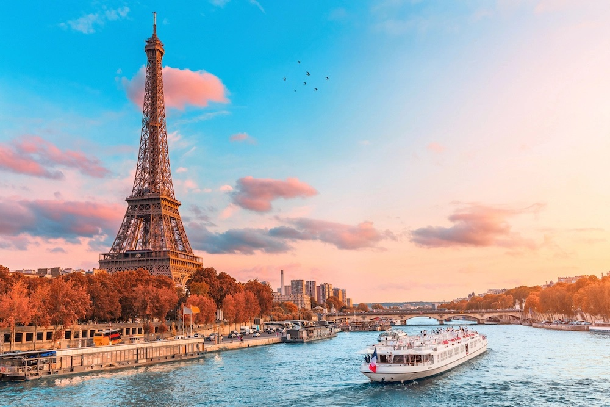

Parigi
Voto: 9
Romantica, eccentrica, grandiosa, raffinata:
Parigi non può mancare nella tua lista delle capitali europee da visitare con la tua metà per un weekend di vacanza.
Una volta nella Ville Lumiere, non avrai che da scegliere:
puoi dividere i tuoi percorsi tra le due rive della Senna,
visitando il Louvre, gli Champs Elysees e Beaubourg,
ora muovendoti tra Torre Eiffel, Hotel des Invalides e Museo d'Orsay (magari gustandoti anche un tour sul fiume a bordo di un bateau mouche).
E per finire in bellezza, concediti una lunga passeggiata a Montmartre, che resta ancora oggi uno dei quartieri più belli di Parigi. Il prezzo medio per visitare Parigi per due persone è di circa 1000€,
il prezzo può variare in base al periodo in cui si visita la citta dell'amore.
LA CITTA' CHE NON DORME
